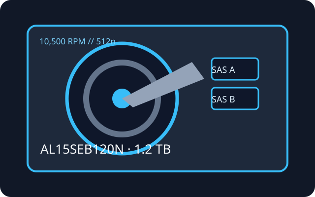

[ IDENTIFIED HDD // MODEL-SPECIFIC RECORD ]
Toshiba AL15SEB120N
1.2 TB 10.5K enterprise-performance SAS hard drive. Exact suffix matters: this 512n part is not a substitute for a same-capacity 4Kn SKU.

Recorded specifications
| Exact model | Toshiba AL15SEB120N |
|---|---|
| Capacity | 1.2 TB |
| Sector format | 512n (native 512-byte logical sectors) |
| Interface / ports | SAS-3, 12 Gbit/s, dual-port |
| Rotational speed | 10,500 rpm |
| Cache | 128 MiB buffer |
| Form factor | 2.5-inch, 15 mm class |
| Workload / reliability | Toshiba reports 2,000,000-hour MTTF for the AL15SE series; this population estimate is not a service-life promise. The cited series source states no annual workload rating or MTBF; MTTF is not MTBF. |
Host compatibility and qualification
- Use a SAS-capable HBA or RAID controller and a SAS backplane/expander that supports the drive's 12G signaling, dual-porting where required, power and physical 2.5-inch carrier. A SATA-only controller or SATA-only backplane cannot operate a SAS drive.
- Older SAS-2 hosts may negotiate a lower link rate only when their firmware, drive support matrix, enclosure and sector handling allow it. Verify controller capacity and 512n support before deployment.
- MTTF does not predict when an individual drive will fail. Check the actual label/firmware and sector presentation; maintain separate tested backups and monitor errors, temperature and vibration.
Manufacturer sources
- Toshiba — AL15SE series product informationManufacturer family specifications, interface, performance and reliability context.
- Toshiba — Enterprise HDD product catalogManufacturer catalog; confirm the full suffix and sector option against the drive label.